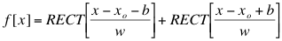

A symmetric pair of RECT functions with the same width and amplitude. When creating the double slit, the endpoints of the rectangles are ignored.

Parameters:
Support: b + w
Area: 2*b*A0
Symmetry: even
Read more about the double-slit experiment at: